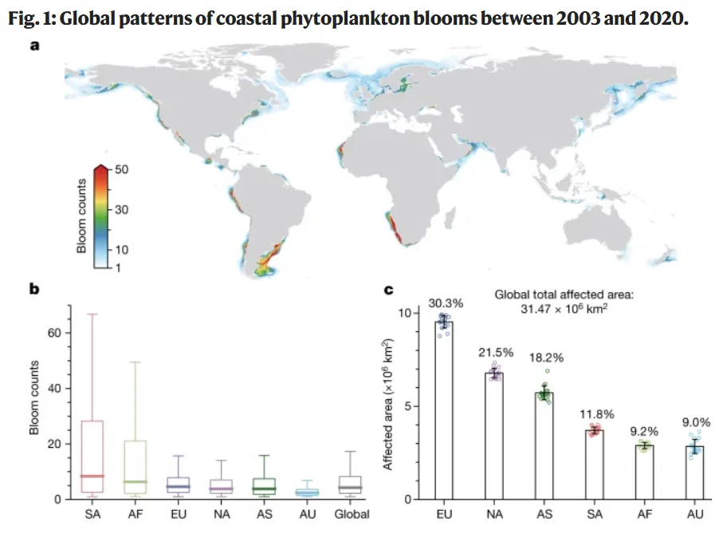
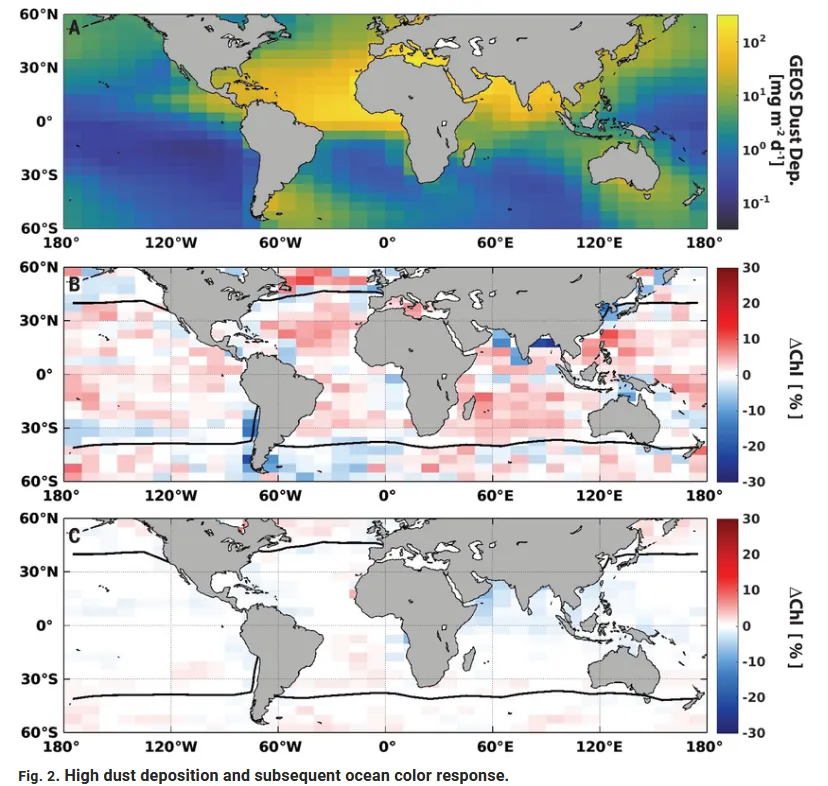
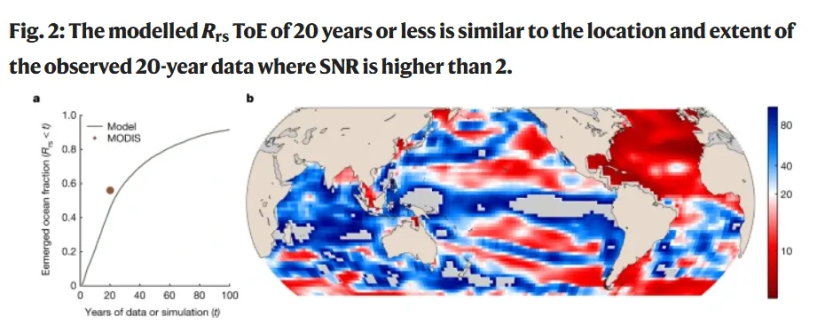
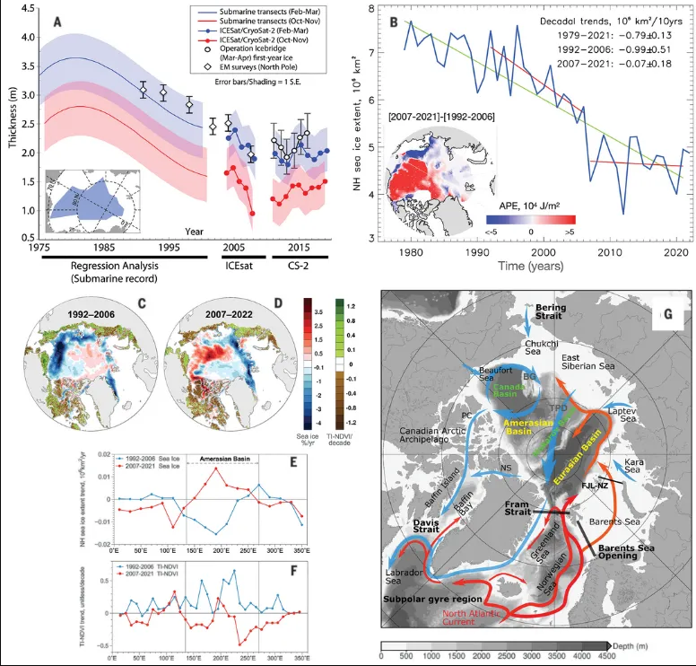
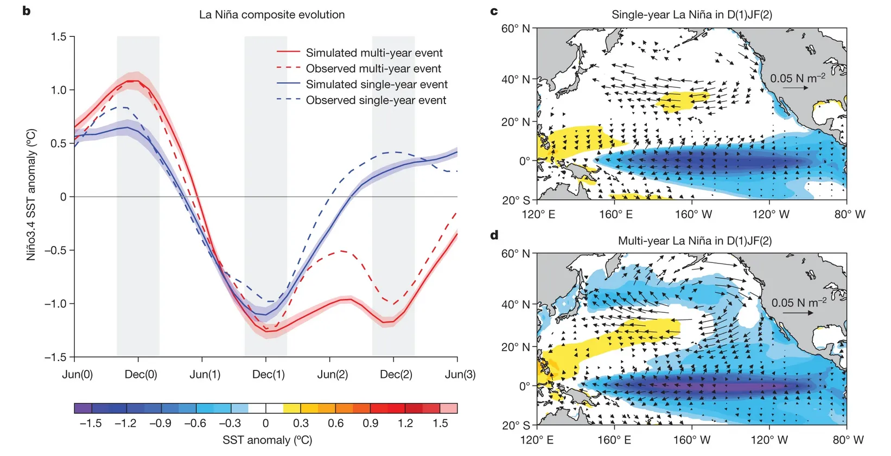
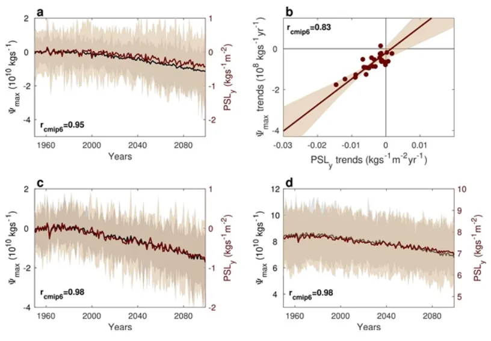
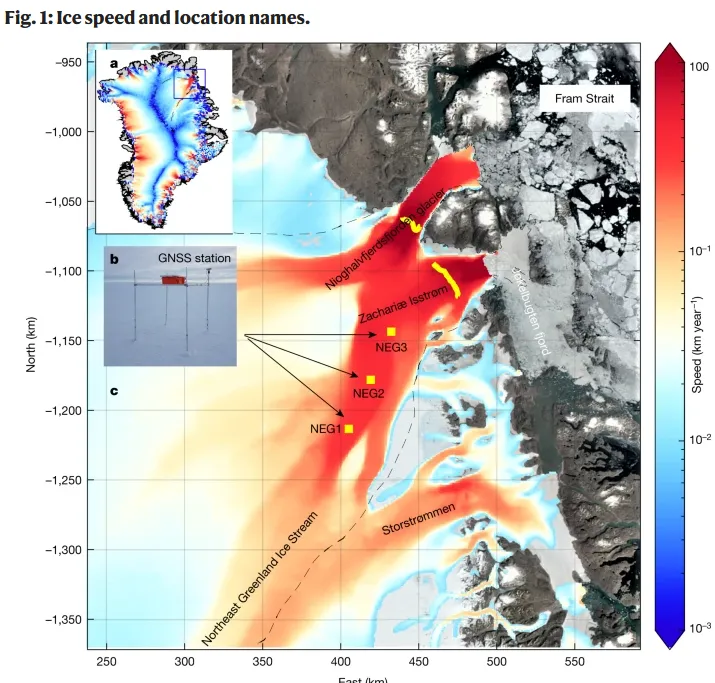
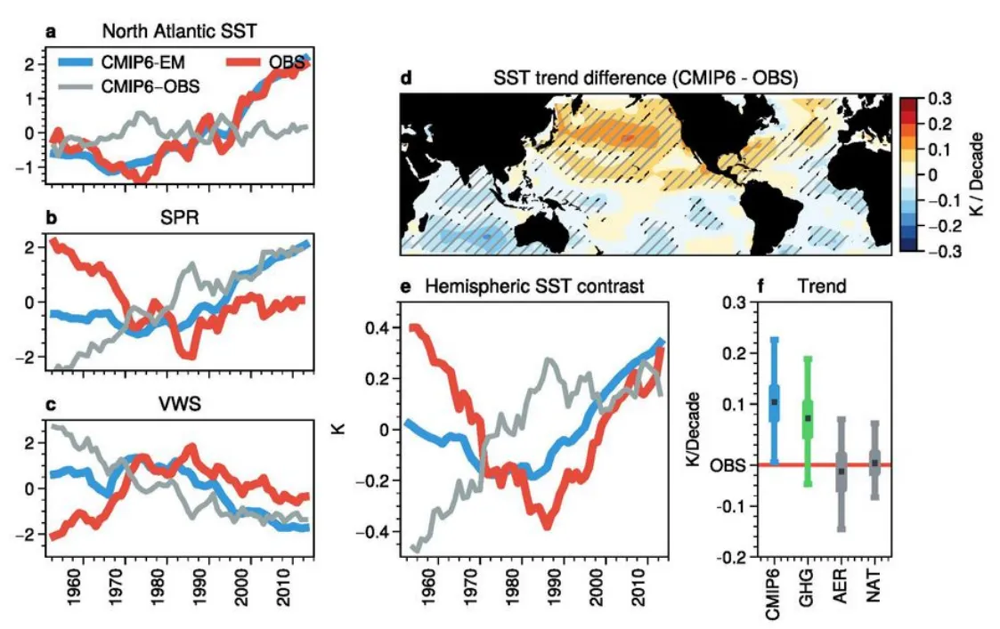
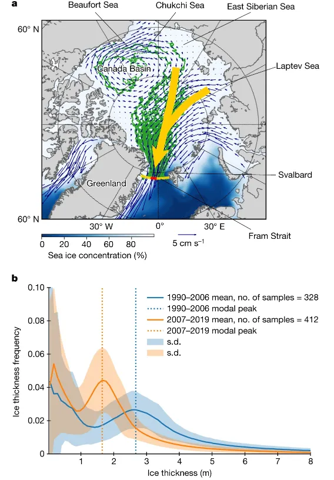
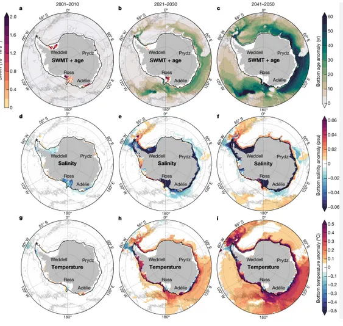

2023年Nature和Science海洋遥感和物理海洋论文
随着一年的即将结束，我们回顾了《Nature》和《Science》期刊在过去一年中发表的物理海洋学和海洋遥感领域的论文。从众多研究中，我们精心挑选出了十篇最具代表性和影响力的论文，以此来展示这些领域的最新进展和发现。愿这些卓越的研究激励我们所有人在新的一年里继续追求学术上的卓越成就。
Tips: 使用WoS进行文献检索，设定期刊和关键词。
一、21世纪全球沿海浮游植物水华的变化趋势

Dai, Y. et al. Coastal phytoplankton blooms expand and intensify in the 21st century. NATURE vol. 615 280+ (2023).
这篇2023年发表在《自然》杂志的研究论文由Yanhui Dai等人完成，探讨了21世纪全球沿海浮游植物水华的变化趋势。研究利用2003年至2020年间的全球卫星观测数据，分辨率为1公里，制作了沿海浮游植物水华的日常分布图。结果表明，全球153个沿海国家中有126个出现了浮游植物水华。全球范围内，水华的空间范围增加了13.2%，频率增加了59.2%，而在北半球的热带和亚热带地区，水华却有所减弱。
研究发现，海表面温度（SST）的上升可能刺激了高纬度地区水华的发生。特别是在阿拉斯加海域、波罗的海等地区，水华频率与同期SST呈显著正相关。此外，气候变化对海洋环流的影响，如海表面温度梯度的变化，也对水华的形成产生了影响。例如，加州流域、加那利流域和孟加拉流域等地区的水华变化与海表面温度梯度的变化密切相关。
研究还指出，人类活动导致的营养物质输入可能也对水华趋势产生了影响。例如，阿拉伯海的水华减弱可能与周边国家减少化肥使用有关。此外，亚洲一些国家水华增强可能与化肥使用量激增相关。研究通过每日水华事件的映射，为理解水华形成、维持和消散的机制提供了重要的基础信息，有助于开发预测模型，以减少有害水华的影响，并帮助制定控制营养物质排放和其他刺激有害水华因素的政策决策。同时，考虑到许多水华对生态系统以及野生和养殖渔业具有积极影响，这些结果也可用于制定维持这些有益水华的政策和管理措施。
二、大气气溶胶对全球海洋生态系统的影响

Westberry, T. K. et al. Atmospheric nourishment of global ocean ecosystems. SCIENCE 380, 515–519 (2023).
本论由T. K. Westberry等人撰写，发表于2023年5月4日的《Science》杂志。研究重点在于大气气溶胶对全球海洋生态系统的影响。虽然海洋中的主要营养物质主要来自深层海水的上涌，但大气气溶胶（尤其是沙漠沙尘）也被认为是另一个潜在的营养源。通过分析卫星观测到的海洋颜色变化，研究团队展示了沙尘沉降如何影响全球浮游植物的分布，且这种影响因地区而异。预计气候变化将改变这种机制的相对重要性。
研究中利用了14年的全球尺度沙尘沉积模型数据与卫星海洋颜色产品，揭示了海洋浮游植物群落对大气沙尘沉积的普遍响应。具体而言，他们利用了MODIS-Aqua（Moderate Resolution Imaging Spectroradiometer on the Aqua satellite）卫星上的仪器来观测海洋颜色，从而分析全球海洋中的浮游植物分布和生物量变化。在稳定的低纬度海洋区域，这些响应主要表现为浮游植物群落生理状况或健康状况的改善，而在季节变化较大的高纬度海域，则常常观察到浮游植物生物量的增加。研究估计，海洋上的沙尘沉积每年支持255太克碳的初级生产力，占全球年度出口生产的4.5%。在某些区域，这一贡献可以达到年度出口颗粒碳通量的20%到40%。全球变暖预计将改变大气中沙尘的负荷和沉积模式，使得这种营养源对未来海洋生态系统的贡献变得不确定。
这项研究突出了大气沙尘作为海洋生态系统额外营养源的重要性，并指出气候变化对这种机制的潜在影响。通过使用卫星海洋颜色产品，研究提供了全球海洋生态系统对常规但规模较小的沙尘沉积事件的观测证据。这一发现强调了海洋生物对大气输入的广泛响应，这种响应虽然只是总浮游植物储量或年度净初级生产的一小部分，但它们是海洋生产的重要组成部分，可能在全球变暖的背景下发生变化。
三、海洋水色遥感揭示气候变化

Cael, B. B., Bisson, K., Boss, E., Dutkiewicz, S. & Henson, S. Global climate-change trends detected in indicators of ocean ecology. NATURE (2023) doi:10.1038/s41586-023-06321-z.
在这项研究中，科学家们通过分析20年的海洋水色（遥感反射率，Rrs）时间序列数据，揭示了全球海洋生态系统在气候变化影响下的显著趋势。这些数据来源于Aqua卫星上的中等分辨率成像光谱仪（MODIS）。研究发现，在全球海洋表面的56%区域，主要是40°纬度以内的地区，Rrs出现了显著趋势。研究表明，低纬度海洋在过去20年中变得更加绿色。
与此同时，研究还使用了一种先进的海洋生态系统模型，该模型模拟了在高温室气体排放情景下21世纪的海洋生态系统和生物地球化学循环的变化。通过对模型数据进行类似的分析，发现在46%的海洋区域中，20年内Rrs的气候变化信号已经显现，与观测到的趋势相似。这些模拟结果表明，观察到的Rrs趋势可能是由气候变化驱动的。
此项研究的发现对理解全球海洋生态系统的变化具有重要意义。由于Rrs是一个综合了多种变量的指标，它可以更早地反映出由气候变化引起的趋势，而不仅仅是单一变量如叶绿素的变化。这一发现强调了长期卫星任务的重要性，并为未来的海洋保护和治理提供了有价值的信息。
四、北冰洋变暖过程的驱动力

Polyakov, I. V. et al. Fluctuating Atlantic inflows modulate Arctic atlantification. SCIENCE 381, 972–979 (2023).
这篇论文由Igor V. Polyakov等人撰写，发表于2023年8月31日的《Science》杂志。研究聚焦于北冰洋变暖的一个主要原因，即大量来自北大西洋的温暖水流被输送到高纬度海洋中，这一过程被称为“大西洋化”。文章探讨了这一过程的驱动力，发现大规模的气候模式——北极偶极子模式，通过造成大西洋输入流在弗兰姆海峡和巴伦支海的变化，导致北极海洋环流、淡水通量进入美拉西亚盆地、海洋分层和热通量的变化。
研究表明，北极偶极子模式中的反气旋风在北美和欧亚大陆上空产生的气候模式，调节了来自北大西洋穿越北欧海的输入。2007至2021年间，这种“开关机制”削弱了北向输入，增加了跨越弗兰姆海峡的海冰输出，并增加了巴伦支海的输入。北极偶极子模式正相位（AD+）导致加强的北极海洋环流，将淡水转移到美拉西亚盆地，增强了分层，降低了那里的海洋热通量，从而减缓了2007年以后的海冰损失。北极偶极子模式负相位的转变可能会加速北极海冰的衰退，从而进一步改变北极气候系统。
研究的创新之处在于揭示了高纬度大西洋化的关键驱动机制，并为全面理解北极气候系统的运作提供了信息。这些发现对于理解北极海冰变化、海洋环流和淡水通量的长期趋势至关重要，对于制定应对全球气候变化的策略具有重要意义。
五、全球变暖下连续性拉尼娜事件增加
Geng, T. et al. Increased occurrences of consecutive La Nina events under global warming. NATURE vol. 619 774+ (2023).

这篇于2023年7月26日发表在《自然》杂志的研究论文，由Tao Geng及其团队撰写，着重探讨了全球变暖背景下连续性拉尼娜事件增加的情况。文章指出，与单年拉尼娜事件相比，连续性拉尼娜特征为更广泛的纬向东风和较慢的赤道太平洋热量回充，使得冷异常持续，并对全球气候、生态系统和农业产生长期影响。研究利用未来温室气体强迫下的气候模型，发现在低排放情景下连续性拉尼娜事件增加了19%，而在高排放情景下增加了33%，且在更高排放情景下模型间共识更强。
研究表明，全球变暖导致副热带东北太平洋的平均状态增温，在响应厄尔尼诺暖异常时产生了比20世纪更向北的异常东风。由于赤道东太平洋的增温最大，使得北扩的异常模式更为敏感。与北扩的东风异常相关的较慢热量回充有助于第一年拉尼娜的冷异常持续到第二年。因此，像历史上连续性拉尼娜事件期间所见的极端气候现象在21世纪可能更为频繁。
本研究揭示了在全球变暖背景下，热带与副热带之间的双向相互作用的加剧，这一发现超越了近期关于单向变暖诱导北太平洋子午面模式（NPMM）对厄尔尼诺影响增强的研究。此研究结果表明，未来连续性拉尼娜事件频率可能增加，强化了迫切需要减少温室气体排放以减轻其不利影响的呼吁。
六、人为导致的北半球热带环流减弱

Chemke, R. & Yuval, J. Human-induced weakening of the Northern Hemisphere tropical circulation. NATURE vol. 617 529+ (2023).
这篇于2023年4月17日发表在《自然》杂志的研究论文，由Rei Chemke和Janni Yuval撰写，标题为“人为导致的北半球热带环流减弱”。文章指出，由于赤道环流（Hadley circulation）在热带地区负责大部分向极地输送大气热量和水分，它在很大程度上影响着低纬度地区的降水和温度的纬向模式。因此，为了增强我们对人为气候变化的准备，准确评估赤道环流对人类排放的响应是至关重要的。然而，目前关于近期北半球赤道环流强度变化存在较大的不确定性。气候模型模拟出环流的减弱，而大气再分析资料大多显示环流的增强，但大气再分析被发现在环流强度上存在人为偏差，导致人类排放对近期赤道环流变化影响未知。
在这篇文章中，作者通过使用海平面气压测量来约束赤道环流的近期变化，并显示出与最新一代气候模型一致，环流在近几十年显著减弱。研究进一步表明，环流的减弱可归因于人类排放，这增加了我们对人为热带气候变化预测的信心。鉴于赤道环流在低纬度地区的巨大气候影响，近期人为导致的流动减弱意味着对热带-亚热带区域气候的更广泛影响。
七、格陵兰岛东北部冰流大面积内陆变薄和加速

Khan, S. A. et al. Extensive inland thinning and speed-up of Northeast Greenland Ice Stream. NATURE vol. 611 727+ (2022).
这篇于2022年11月9日发表在《自然》杂志的研究论文，由Shfaqat A. Khan等人合著，关注了格陵兰岛东北部冰流（Northeast Greenland Ice Stream, NEGIS）的内陆变薄和加速现象。研究表明，在过去的20年中，由于表面融化和冰流入海的增加，格陵兰冰盖（GrIS）的冰量损失加剧。NEGIS作为格陵兰岛最大的流域，连接冰盖内部和低海拔海洋终止冰川的快速流动冰的主要通道，对全球海平面上升有重要贡献。
研究使用了全球导航卫星系统（GNSS）观测、卫星数据获取的表面高程变化和表面速度，选取正确的底部条件用于冰流数值模型，然后用这些模型进行未来模拟。研究发现，自2012年起由前缘变化引发的广泛加速和变薄现象已经向内陆传播超过200公里。模型结果表明，这一海洋基底部分到2100年将贡献13.5-15.5毫米的海平面上升，预计本世纪将发生急剧变化。这项研究表明，测量冰速和高程在内陆的微妙变化有助于约束未来质量平衡的数值模型，较高端的预测与观测结果更为吻合。
本研究的主要内容包括NEGIS通过两条快速流动的海洋终止出口冰川——Nioghalvfjerdsfjord Gletscher (NG) 和 Zachariae Isstrøm (ZI)——排放约12%的格陵兰岛内陆冰。这一区域拥有1.1米海平面上升当量，并以一个约600公里长、30-50公里宽、连接冰盖深处和较低海拔海洋终止出口冰川的快速流动主干为特征。理解NEGIS上下游速度之间的耦合对于准确预测其对全球海平面上升的贡献至关重要。尽管以前的研究表明卫星干涉测量可以提供高度详细的整个冰盖速度图，但检测冰流加速的能力仅限于边缘区域。作者量化了NEGIS深处（超过100公里内陆）的加速和变薄，并展示了这些测量对未来模拟至关重要，因为它们能更好地约束底部条件。
八、热带大西洋气候的多年代际变化

He, C. et al. Tropical Atlantic multidecadal variability is dominated by external forcing. NATURE (2023) doi:10.1038/s41586-023-06489-4.
这篇于2023年发表在《自然》杂志的研究论文，由Chengfei He等人合著，探讨了热带大西洋气候的多年代际变化，特别是大西洋海表面温度（SSTs）、撒哈拉以南非洲降雨和飓风活动之间的关系。研究指出，自1950年以来，由人为排放和火山气溶胶引起的辐射扰动主导了热带大西洋SSTs的赤道梯度变化，这一变化是大西洋飓风形成和撒哈拉以南非洲降雨的关键决定因素。
研究通过分析CMIP6地球系统模型的大量集合发现，这些模型在1950年左右高估了北半球相对于南半球的长期温暖趋势，以及与之相关的大气环流和降雨变化。当去除这些高估的趋势后，SSTs与大西洋飓风形成和撒哈拉以南非洲降雨之间的关联作为对辐射强迫的响应出现，特别是在1950年之后，当时人为气溶胶强迫较高。研究结果表明，与整个北大西洋SSTs相比，热带大西洋SST梯度是热带影响的更强决定因素，因为梯度通过局部大气环流更直接地与热带影响相联系。
这项研究强调了大西洋飓风活动和撒哈拉以南非洲降雨变化可以根据人为排放和火山活动驱动的辐射强迫进行预测，但由于信噪比悖论和未来气候强迫的不确定性，这些预测的准确性受到限制。
九、北极海冰对气候变化的响应

Sumata, H., de Steur, L., Divine, D. V., Granskog, M. A. & Gerland, S. Regime shift in Arctic Ocean sea ice thickness. NATURE vol. 615 443+ (2023).
这篇2023年发表在《自然》杂志的研究论文由Hiroshi Sumata等人完成，展示了北极海冰厚度的显著变化。研究表明，2007年北极海冰从厚实且粗糙的状态转变为更薄且更均匀的覆盖。通过在过去三十年里对位于弗拉姆海峡的海冰进行持续监测，发现了这一转变。在转变后，厚实且粗糙的冰块比例减少了一半，并且至今没有恢复到之前的状态。这一转变的时机先于北极盆地海冰停留时间的两阶段减少，首先发生在2005年，随后是2007年。研究还展示了一个简单的模型，该模型描述了海冰动态变厚的随机过程，并解释了观测到的海冰厚度变化是由于停留时间的减少所导致的。
该研究强调了气候变化对北极海冰的长期影响，通过减少停留时间与北极海洋邻近边缘海域和架区的耦合海冰过程相联系。北极海冰的形成区域主要在阿拉斯加至西伯利亚的北极边缘海域，然后被跨极漂流携带到中央北极，维持着多年冰盖。自2007年以来，这些区域的海冰在夏季更容易融化，并且在秋季新冰形成的开始也被延迟。这些过程通过大规模海冰运动将冰从边缘海带到中央北极，进而影响了整个北极的海冰特性。
这项研究表明，北极海冰厚度的变化与其在北极盆地的停留时间密切相关，这强调了北极阿拉斯加和西伯利亚部分的海洋-海冰过程的重要性。由于这些区域在过去二十年末期的夏季海冰浓度降低，导致了2005年和2007年北极海冰停留时间的降低。气候变化对北极海冰的这种长期影响表明，由于在冰的形成区域海洋热量的增加，北极海冰对气候变化的反应可能是不可逆的。
十、深海环流的变化及其与南极融冰的关联

Li, Q., England, M. H., Hogg, A. McC., Rintoul, S. R. & Morrison, A. K. Abyssal ocean overturning slowdown and warming driven by Antarctic meltwater. NATURE vol. 615 841+ (2023).
这篇文章由Qian Li等人于2023年在《自然》杂志上发表，主题是深海环流的变化及其与南极融冰的关联。深海洋环流是全球经纬向翻转环流的关键组成部分，对全球海洋的热量、碳、氧和营养物质的循环至关重要。最显著的历史趋势是高纬度南大洋的增温，但目前尚不清楚是什么过程驱动了这种增温，以及这种增温是否与海洋翻转环流的减缓有关。由于观测数据的限制和气候模型在该地区的偏差，难以将变化归因于特定的驱动因素。此外，未来的变化仍然存在不确定性，因为最新的协同气候模型预测未考虑到动态冰盖融化。
研究利用高分辨率耦合海洋-海冰模型，展示了在高排放情景下，未来30年深海洋增温将加速。研究发现，南极周围的融水输入导致南极底层水（AABW）收缩，为温暖的环极深水进入大陆架提供了通道。AABW形成的减少导致深海洋变暖和老化，这与最近的观测数据一致。相比之下，预测的风和热力驱动对AABW的性质、年龄和体积影响甚微。这些结果突显了南极融水在决定深海洋翻转环流方面的关键重要性，对全球海洋生物地球化学和气候的影响可能持续数个世纪。